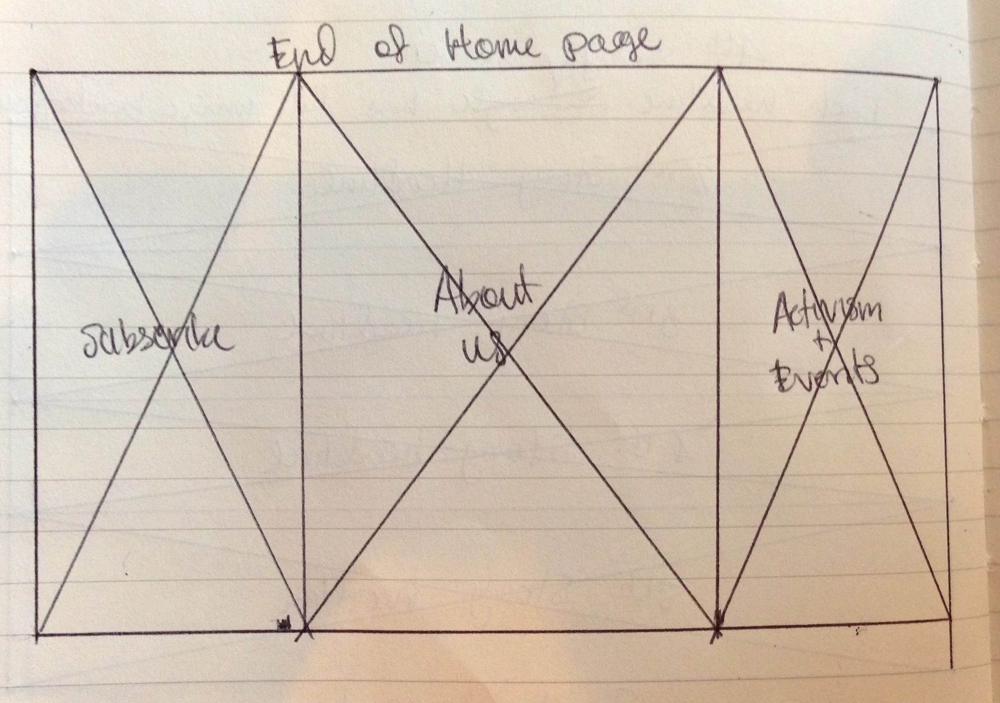
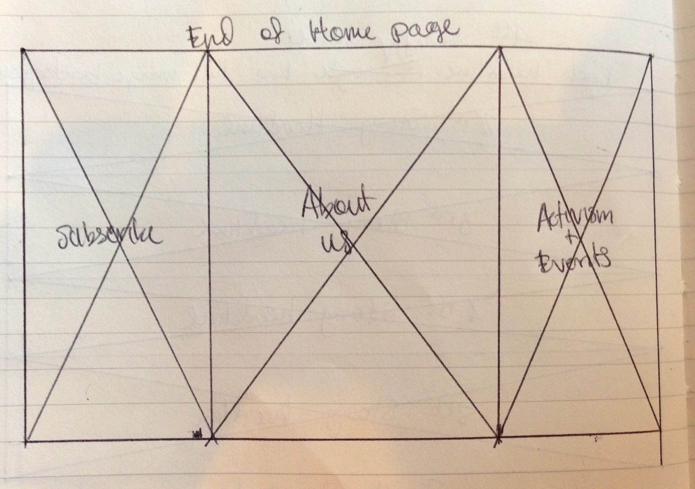
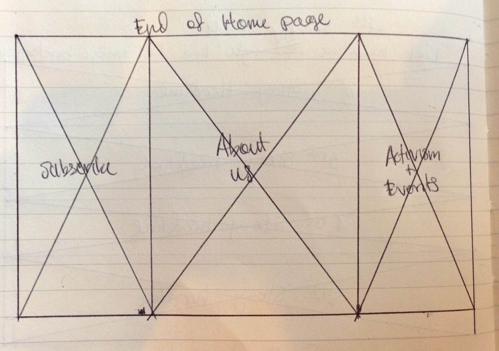

I was most inspired by the Quartz and Tribeca Penthouse websites.
Unlike other news sites, Quartz focuses on providing a less cluttered approach to presenting the news. They start off with a massive headliine image for their top story, which covers the majority of the screen when you log on, then they keep all other stories evenly stacked underneath by having all subsequent stories stretched across as individual story rows.
Tribeca Penthouse also focuses on hitting you with a full image. They use the 3 column arrangment to organize their short blurbs about the penthouse that they are promoting. The text alternates from left to right, as you move down from one massive div image to the next.
Both sites leave you feeling fully immersed in the subject matter.
However, whereas the Tribeca Penthouse website gives equal importance to each of it's massive divs, the Quartz website provides hierarchy and direction by starting with a massive image for the top story, then guiding you down to text only, full rows for subsequent stories, and then full image + text rows for their backlog of stories. This creates an "hourglass" figure to the page, while remaining top-heavy for emphasis on the lead story.
With both of these Home Page sketches, I'm trying to use size to provide both the intensity of the stories, as well as to differentiate the top story of the day, from the substories of the day, and finally from the backlog of previous news items.

Again, with the two Story Pages, I'm trying to drive home the impact of the story through the use of a giant photo regarding the topic, then working people down into the story, as they follow the text toward the bottom of the screen. My sense is that the text would generally follow the 1/3rds rule and align left or right, depending on the focus of the image itself.


With the first About Us page, I thought about going really simple to avoid having a "wall of solid text." But in the second version, I thought it would be fun to use the Fibonacci squence to build a Facebook-like page. The client's eye starts at the largest, picture on the Left, then moves top-right, and ends at the bottom right of the page.